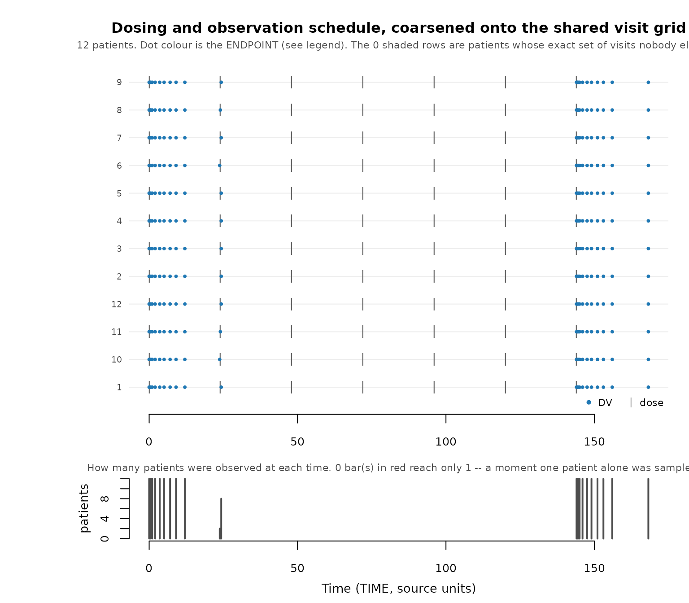

Demo: Using synpmx AVATAR with 5 datasets
Andrew Stein
Source:vignettes/synpmx-demo.Rmd
synpmx-demo.RmdThis vignette compares five source datasets against their synthetic counterparts, so it needs a few helpers to pull observed rows into a common shape and plot them. They are ordinary plotting code, not part of the package API; expand the block if you want to reuse them.
Plotting helpers used throughout this vignette
observed_plot_data <- function(data, roles, dataset,
clock = "study_time") {
observed <- as.character(data[[roles$evid]]) %in% c("0", "0.0")
if (!is.null(roles$mdv)) {
observed <- observed & as.character(data[[roles$mdv]]) %in% c("0", "0.0")
}
observed <- observed & !is.na(data[[roles$dv]])
observation_rows <- which(observed)
occasion <- rep(1L, length(observation_rows))
tad <- rep(NA_real_, length(observation_rows))
if (!is.null(roles$occasion)) {
declared <- suppressWarnings(as.integer(
data[[roles$occasion]][observation_rows]
))
valid <- !is.na(declared) & declared >= 1L
occasion[valid] <- declared[valid]
}
if (!is.null(roles$tad)) {
declared <- suppressWarnings(as.numeric(data[[roles$tad]][observation_rows]))
valid <- is.finite(declared)
tad[valid] <- pmax(0, declared[valid])
}
subject_values <- data[[roles$id]]
for (id in unique(subject_values[observation_rows])) {
subject_rows <- which(!is.na(subject_values) & subject_values == id)
events <- !(as.character(data[[roles$evid]][subject_rows]) %in%
c("0", "0.0"))
if (!is.null(roles$amt)) {
events <- events & as.numeric(data[[roles$amt]][subject_rows]) > 0
}
positions <- which(subject_values[observation_rows] == id)
event_rows <- subject_rows[events]
if (length(event_rows) && !is.null(roles$occasion)) {
event_occasion <- suppressWarnings(as.integer(
data[[roles$occasion]][event_rows]
))
for (position in positions) {
candidates <- event_rows[event_occasion == occasion[position]]
if (length(candidates) && !is.finite(tad[position])) {
origin <- min(as.numeric(data[[roles$time]][candidates]))
tad[position] <-
as.numeric(data[[roles$time]][observation_rows[position]]) - origin
}
}
} else if (length(event_rows)) {
dose_times <- sort(unique(as.numeric(data[[roles$time]][event_rows])))
occasion[positions] <- pmax(1L, findInterval(
as.numeric(data[[roles$time]][observation_rows[positions]]),
dose_times
))
occasion[positions] <- pmin(occasion[positions], length(dose_times))
tad[positions] <-
as.numeric(data[[roles$time]][observation_rows[positions]]) -
dose_times[occasion[positions]]
}
}
plotted_time <- if (identical(clock, "tad")) tad else
as.numeric(data[[roles$time]][observation_rows])
data.frame(
dataset = factor(dataset, levels = c("Source", "Synthetic")),
subject = as.character(data[[roles$id]][observation_rows]),
time = plotted_time,
dv = as.numeric(data[[roles$dv]][observation_rows]),
occasion = occasion,
endpoint = if (is.null(roles$dvid)) "DV" else
as.character(data[[roles$dvid]][observation_rows]),
stringsAsFactors = FALSE
)
}
tad_plot_data <- function(data, roles, dataset) {
out <- observed_plot_data(data, roles, dataset, clock = "tad")
names(out)[names(out) == "time"] <- "tad"
out
}
demo_design_summary <- function(data, roles, dataset, time_bounds,
clock = "study_time") {
plotted <- observed_plot_data(data, roles, dataset, clock)
if (!identical(clock, "tad")) {
plotted <- plotted[
plotted$time >= time_bounds[1L] & plotted$time <= time_bounds[2L],
, drop = FALSE
]
}
cohort_ids <- as.character(unique(data[[roles$id]]))
pieces <- lapply(sort(unique(plotted$endpoint)), function(endpoint) {
rows <- plotted[plotted$endpoint == endpoint, , drop = FALSE]
counts <- table(factor(rows$subject, levels = cohort_ids))
data.frame(
dataset = dataset,
endpoint = endpoint,
patients = length(cohort_ids),
patients_with_endpoint = sum(counts > 0),
observations = nrow(rows),
mean_time_points_per_patient = mean(counts),
median_time_points_per_patient = stats::median(counts),
first_time = min(rows$time),
last_time = max(rows$time),
stringsAsFactors = FALSE
)
})
do.call(rbind, pieces)
}
check_demo_similarity <- function(source, synthetic, roles, time_bounds,
label, clock = "study_time") {
source_subjects <- length(unique(source[[roles$id]]))
synthetic_subjects <- length(unique(synthetic[[roles$id]]))
if (source_subjects != synthetic_subjects) {
stop(label, ": source and synthetic patient counts differ (",
source_subjects, " versus ", synthetic_subjects, ").")
}
source_summary <- demo_design_summary(
source, roles, "Source", time_bounds, clock
)
synthetic_summary <- demo_design_summary(
synthetic, roles, "Synthetic", time_bounds, clock
)
if (!setequal(source_summary$endpoint, synthetic_summary$endpoint)) {
stop(label, ": source and synthetic endpoint sets differ.")
}
paired <- merge(
source_summary, synthetic_summary, by = "endpoint",
suffixes = c("_source", "_synthetic")
)
point_difference <- abs(
paired$mean_time_points_per_patient_synthetic -
paired$mean_time_points_per_patient_source
)
point_allowance <- pmax(
1, 0.25 * paired$mean_time_points_per_patient_source
)
if (any(point_difference > point_allowance)) {
stop(label, ": mean time points per patient differ materially for ",
paste(paired$endpoint[point_difference > point_allowance],
collapse = ", "), ".")
}
coverage_allowance <- 0.20 * diff(time_bounds)
bad_coverage <-
abs(paired$first_time_synthetic - paired$first_time_source) >
coverage_allowance |
abs(paired$last_time_synthetic - paired$last_time_source) >
coverage_allowance
if (any(bad_coverage)) {
stop(label, ": source and synthetic time coverage differs materially for ",
paste(paired$endpoint[bad_coverage], collapse = ", "), ".")
}
summary <- rbind(source_summary, synthetic_summary)
summary$dataset <- factor(
summary$dataset, levels = c("Source", "Synthetic")
)
summary[order(summary$dataset, summary$endpoint), , drop = FALSE]
}
comparison_facets <- function(data) {
ggplot2::facet_grid(dataset ~ endpoint, scales = "free_y")
}
source_synthetic_preview <- function(source, synthetic, n = 6L) {
columns <- intersect(names(source), names(synthetic))
source_rows <- utils::head(source[, columns, drop = FALSE], n)
synthetic_rows <- utils::head(synthetic[, columns, drop = FALSE], n)
source_rows$.dataset <- "Source"
synthetic_rows$.dataset <- "Synthetic"
out <- rbind(source_rows, synthetic_rows)
rownames(out) <- NULL
out[, c(".dataset", columns), drop = FALSE]
}
# The full masking accounting for one run. `pmx_masking_report()` owns the row
# labels and the explanation next to each one, so this vignette and the study
# reports under `scripts_private/` cannot drift apart; only the caption is local.
masking_table <- function(source, roles, synthetic, label) {
knitr::kable(
as.data.frame(pmx_masking_report(synthetic, source, roles)),
row.names = FALSE, align = c("l", "r", "l"),
caption = paste0("Everything ", label,
"'s run removed, and what was left to build on.")
)
}What this package is for
synpmx creates synthetic pharmacometric data for
model-workflow exploration: data to develop and debug cleaning,
joins, reshaping, plotting, control-file plumbing, and repeated-dose or
longitudinal analysis code, so that a pipeline runs unchanged against
the real data later.
The package offers four generation modes, and the “Introduction to synpmx” vignette applies all four to one dataset side by side:
-
AVATAR blending [1, 2]
(
synpmx_avatar()) — build each synthetic subject from real subjects. No elicitation, no formal privacy guarantee. -
Prior only (
synpmx_prior()on a public structural model) — read no data at all. -
Calibration (
synpmx_calibrated()) — simulate from a public structural model whose magnitude is corrected by a small differentially private release. -
Empirical (
synpmx_empirical()) — release a dense set of differentially private summaries and rebuild subjects from them.
“AVATAR” is a method name rather than an initialism, from the patient-centric avatarization literature: the original method is due to Guillaudeux and colleagues [2], and Destere and colleagues benchmark a modified AVATAR for population PK [1]. This package implements an AVATAR-inspired adaptation for longitudinal event tables, not published AVATAR software.
Most of this vignette is about the default, AVATAR
blending, applied to five public datasets with different
structural challenges. For each generated subject it samples a
compatible source subject’s event skeleton as a template, then fills the
covariates and endpoint trajectories with a distance-weighted blend of
similar subjects, plus subject and residual noise. The output has the
source schema, fresh identifiers, and the same cohort size. The final
section runs the model-based path on the same theophylline data, as
scripts/demo_nlmixr2data.R does for all five.
AVATAR output is not anonymous and carries
no formal privacy guarantee. It is synthetic data that
stays under the source data’s access controls and confidentiality
obligations, in the same spirit as Novartis’s synadam
(which resamples each column marginally from the data). Those
obligations follow the data rather than the machine, so working with it
on a local workstation covered by the same controls is a supported use.
It is not appropriate for parameter estimation, inference, model
selection, or clinical decisions. When the generated data would reach
anyone the source data could not, use one of the differentially private
modes instead; vignette("synpmx-privacy") works through
that decision and the tradeoff behind it.
Shared workflow
Every example follows the same three steps:
- declare column meanings with
pmx_roles(); - synthesize with
synpmx_avatar(); - validate structure with
validate_pmx()and compare to the source.
Identifiers, schema, classes, and factor levels are restored on
output. The caller’s random-number state is left untouched;
reproducibility comes from the seed argument.
What the masking does, and what it costs
Enough happens by default that it is worth naming the five mechanisms before looking at any data. The AVATAR algorithm article walks through each in detail. AVATAR blends every avatar’s measurements from several real donors, so no single patient’s numbers survive. But the event skeleton — the pattern of when a patient was dosed and sampled — is copied verbatim from one real anchor, and blending never touches it. Five mechanisms act on that skeleton, and every one of them works by removing something:
The article numbers them M1 to M5, in the order they run; the same order is used here.
| Mechanism | Acts on | Why | |
|---|---|---|---|
| M1 | Snap every time onto a shared visit grid, then add deviations back
from a cohort-wide pool (coarsen_time) |
all times — dose events and DV observations | As recorded, one patient’s list of times is very often unique to them. A pooled deviation restores realism without giving the patient their own back |
| M2 | Drop patients from the anchor pool
(screen, on_donor_shortfall) |
whole source patients | Follow-up or dose count over 2× the cohort’s 90th
percentile would give any avatar a conspicuous skeleton; a
route arm under k + 1 has too few donors to blend with |
| M3 | Redraw which visits an avatar attended
(min_pattern_share) |
DV observations only — dose events untouched | A combination of missed visits held by one patient is a fingerprint made of gaps |
| M4 | Blend covariates and DV from donors, capped (k,
max_donor_weight) |
measured values | No avatar’s numbers come from one real patient |
| M5 | Recompute the dose amount (automatic) | dose amounts, under weight-based (mg/kg) or BSA (mg/m²) dosing | A copied dose under mg/kg discloses the anchor’s weight exactly |
flag_identifiable_subjects() runs after generation and
is deliberately not in this table: it is a plausibility
check rather than a masking step, and synpmx_avatar() does
not run it for you. The algorithm article explains why.
How you check whether it worked
Three measurements, because an avatar can point back at a real patient in three independent ways. A study can pass one and fail another, so none substitutes for the rest.
| Function | Asks | Run on | Target |
|---|---|---|---|
skeleton_uniqueness() |
Is anyone’s observation schedule unique — the list of times they were sampled at? Separately, is anyone’s dosing unique? | source, before generating | 0 unique |
flag_identifiable_subjects() |
Does anyone stand out on follow-up length, dose count, dose size, or peak DV? | synthetic output | nothing flagged |
compare_pmx_proximity() |
Did a synthetic patient’s covariates and DV trajectory together land nearer a real patient than real patients lie to each other? | the pair, after | near 0.5 |
Sampling and dosing are scored separately and only the first is what “schedule” means here: the observation time vector excludes dose rows entirely. Dosing uniqueness is a different number, and coarsening does not touch it — a study with weight-based dosing leaves patients unique on dose however good the visit grid is.
The headline count is one number split by cause, and the split says what to do next:
-
unique observation schedule — patients whose list
of observation times nobody else shares. Drive this to zero. It is
always the sum of the next two.
-
unique observation time — sampled at a clock time
nobody else was. A grid can fix this; that is what
coarsen_timeis for, and a nonzero count after coarsening means declaringnominal_timeis the fix. -
unique set of visits — every time shared, but this
combination of attended and missed visits is theirs. No grid can fix
this at any resolution.
min_pattern_shareaddresses it during generation; otherwise remediate or accept.
-
unique observation time — sampled at a clock time
nobody else was. A grid can fix this; that is what
None of this is free, and the costs differ sharply by dataset. So each dataset below ends with its own full accounting — how many patients were excluded and why, how many visit sets were lost and who held them, how many subjects still hold a schedule nobody shares. The tables are deliberately verbose. Reading one takes a minute; not reading it means shipping a dataset without knowing what came out of it.
Two quantities are worth learning to read first, because they are the ones that surprise people:
-
“Unique observation schedule” — a patient whose
list of observation times no other patient shares. An avatar anchored on
such a patient wears a schedule belonging to exactly one real person,
however carefully its concentrations were blended. The count is split by
cause, because the two causes have different answers: a unique
observation time is the grid’s job and is fixed by declaring
nominal_time, while a unique set of visits is dropout and no grid can fix it. - “Patterns discarded” — a real dropout or dose-interruption pattern that will not appear in the output at all. That loss is the mechanism working, not a bug: it is what stops an avatar carrying a schedule traceable to one person. Whether the cost is acceptable is a per-study judgment, which is why every run reports it.
Theophylline: repeated dosing, dose-relative PK
theo_md has 12 subjects on a repeated oral regimen with
a single concentration endpoint.
data("theo_md", package = "nlmixr2data")
theo_roles <- pmx_roles(
id = "ID", time = "TIME", dv = "DV", amt = "AMT",
evid = "EVID", cmt = "CMT", covariates = "WT"
)
theo_synth <- synpmx_avatar(theo_md, theo_roles, seed = 303)
#> synpmx_avatar(): no `dvid` declared, so every observation is treated as one endpoint.
#> Correct for a single-endpoint study; declare `dvid` if this one has more.
#> Warning: Synthetic generation used documented small-group/profile fallbacks:
#> - Fewer than 5 same-schedule donors were available for at least one
#> subject; the nearest donors from other dose/schedule groups on the same
#> route were borrowed to reach the floor, so some measurements are blended
#> across doses.
validate_pmx(theo_synth, theo_roles)$valid
#> [1] TRUE
knitr::kable(
source_synthetic_preview(theo_md, theo_synth),
caption = "Actual Theophylline rows and synthesized rows"
)| .dataset | ID | TIME | DV | AMT | EVID | CMT | WT |
|---|---|---|---|---|---|---|---|
| Source | 1 | 0.0000000 | 0.0000000 | 319.992 | 101 | 1 | 79.60000 |
| Source | 1 | 0.0000000 | 0.7400000 | 0.000 | 0 | 2 | 79.60000 |
| Source | 1 | 0.2500000 | 2.8400000 | 0.000 | 0 | 2 | 79.60000 |
| Source | 1 | 0.5700000 | 6.5700000 | 0.000 | 0 | 2 | 79.60000 |
| Source | 1 | 1.1200000 | 10.5000000 | 0.000 | 0 | 2 | 79.60000 |
| Source | 1 | 2.0200000 | 9.6600000 | 0.000 | 0 | 2 | 79.60000 |
| Synthetic | 13 | 0.0000000 | 0.0000000 | 319.365 | 101 | 1 | 67.54081 |
| Synthetic | 13 | 0.0000000 | 0.0052007 | 0.000 | 0 | 2 | 67.54081 |
| Synthetic | 13 | 0.2441667 | 1.9837550 | 0.000 | 0 | 2 | 67.54081 |
| Synthetic | 13 | 0.5658333 | 6.0679640 | 0.000 | 0 | 2 | 67.54081 |
| Synthetic | 13 | 1.0666667 | 9.8366676 | 0.000 | 0 | 2 | 67.54081 |
| Synthetic | 13 | 2.0200000 | 9.1141831 | 0.000 | 0 | 2 | 67.54081 |
compare_pmx_distributions() summarizes the dependent
variable per endpoint and each baseline covariate, source against
synthetic, so you can see at a glance that the ranges line up. Expect
them to be close in magnitude and shape, not identical — AVATAR does not
reproduce the source distribution exactly. Like every source-derived
diagnostic it is marked restricted and stays inside the source data’s
access controls.
theo_dist <- compare_pmx_distributions(theo_md, theo_synth, theo_roles)
knitr::kable(theo_dist$endpoints, digits = 2,
caption = "Concentration distribution, source versus synthetic")| variable | dataset | n | n_subjects | mean | sd | min | q25 | median | q75 | max |
|---|---|---|---|---|---|---|---|---|---|---|
| DV | source | 264 | 12 | 5.53 | 3.00 | -1.13 | 3.30 | 5.74 | 7.80 | 12.66 |
| DV | synthetic | 264 | 12 | 5.03 | 2.63 | 0.00 | 3.38 | 5.23 | 6.75 | 11.77 |
knitr::kable(theo_dist$covariates_numeric, digits = 2,
caption = "Baseline weight distribution, source versus synthetic")| variable | dataset | n | mean | sd | min | q25 | median | q75 | max |
|---|---|---|---|---|---|---|---|---|---|
| WT | source | 12 | 69.58 | 9.50 | 54.60 | 63.57 | 70.5 | 74.43 | 86.40 |
| WT | synthetic | 12 | 68.53 | 5.18 | 58.23 | 65.50 | 69.7 | 71.69 | 77.08 |
What the masking did to theophylline
masking_table(theo_md, theo_roles, theo_synth, "theophylline")| Quantity | Value | What it means |
|---|---|---|
| Who was available to build on | ||
| Patients in the source | 12 | |
| excluded as structurally extreme | 0 |
screen: follow-up or dose count over twice
the cohort’s 90th percentile |
| excluded, route arm too small | 0 |
on_donor_shortfall: a route arm holding
fewer than k + 1 patients |
| left to anchor avatars on | 12 | an excluded patient still contributes as a donor |
| Avatars built | 12 | cohort size is unaffected by the exclusions above |
| Donor pools: who may be blended with whom | ||
| Administration routes | 1 | oral, infusion, and so on. Donors are NEVER blended across a route, so each is a separate pool |
| Dose/schedule groups | 11 | patients with an identical dose pattern and endpoint set. Donors are looked for here first; many small groups means the search falls back to the wider route pool |
| How much of one real patient reaches one avatar | ||
| Donor floor, k | 5 | real patients blended into each avatar |
| Largest share one donor may hold | 0.5 | max_donor_weight |
| that cap actually bound on | 67% | of avatars. Near 100% means the cap, not distance, is setting the weights |
| Effective donors per avatar, mean | 3.08 | 1 / sum(w^2). This, not k, is how many patients an avatar is really made of |
| Visit schedule: WHEN patients were observed | ||
| Visit grid used | derived | no usable nominal_time, so a grid was
inferred from the recorded times themselves. Declaring
nominal_time is better |
| Unique observation schedules, before coarsening | 12 | patients whose list of observation times nobody else shares |
| Unique observation schedules, after coarsening | 0 | the count that matters: an avatar copies its anchor’s times verbatim |
| because of a one-off observation time | 0 | sampled when nobody else was. Declaring
nominal_time is the fix |
| because of which visits they attended | 0 | every time is shared; this is dropout, and no grid can fix it |
| Visit sets: WHICH of those visits each patient attended | ||
| Distinct visit sets in the source | 3 | a visit set is which of the shared grid visits one patient actually had |
| held by fewer than 2 patients, so not reused | 0 |
min_pattern_share is that threshold. These
visit sets are lost, not approximated |
| real patients holding those | 0 | those patients are NOT removed – they still anchor avatars and still act as donors. Only their particular pattern of absences stops being copied |
| Avatars given a visit set from the pool | 100% | drawn from the sets that cleared the threshold, or built from their shape – never from their own anchor alone |
| of those, misses placed fresh | 0% | the kind of missingness was reused; exactly which visits were missed was invented |
| of those, miss count moved | 0% | no placement at the wanted number of misses was free, so the count moved by a visit or two. Dropout is the usual reason: a discontinuation at a given depth has only one possible placement |
| Avatars keeping their anchor’s own visit set | 0% | the last-resort fallback, and the one row you want at 0%: these avatars carry one real patient’s absences exactly. The run alerts past 10% |
| Dose | ||
| Amounts recomputed from a covariate | no | the 11 distinct dose amounts are not a fixed multiple of any declared covariate: WT (8 ratio levels for 11 distinct amounts – too many to be a protocol) |
so amt is copied verbatim |
from the anchor | each avatar’s implied dose per kg is therefore its
anchor’s, not its own, and the amount still encodes one real patient’s
covariate. Declare dose_covariate if this study is weight-
or BSA-based |
This is the easy case, and it is worth understanding why. Nothing was excluded: no subject is structurally extreme, and with one route there is no arm below the donor floor, so all twelve subjects were available to anchor on and twelve avatars were built.
The interesting row is the schedule pair. All twelve patients start out with a unique observation schedule — their observation times are recorded at full precision and no two patients were sampled at exactly the same moment, so every one of them holds a list of times nobody else shares. After coarsening the count is zero. The inferred grid found the shared visit structure underneath the recorded times and pulled everyone onto it. That is the coarsening mechanism doing its entire job.
The visit-set rows follow from it. Before coarsening every subject holds its own visit set — twelve for twelve subjects, since no two were sampled at the same moments. Afterwards there are three, each shared by several subjects, so nothing had to be discarded and no arrangement had to be invented. This is the ideal case: coarsening removes the timing exposure, and visit-set sampling then has a real pool to draw from and costs nothing.
Dose is not recomputed here. Theophylline is dosed by weight, but its dose-to-weight ratio varies by about 15% across subjects, and detection deliberately fails closed rather than impose a multiplier the study did not actually use.
skeleton_uniqueness() is what produced the “before”
number. Read it directly and it summarizes the cohort two ways: how many
patients are unique and why, and how crowded each schedule is. Every
column of the returned data frame counts how many patients share
this property, this patient included, so 1 always
means “nobody else”. By default it scores the recorded times as given;
coarsen_time = TRUE scores the shared visit grid
synpmx_avatar() builds, so running it both ways shows what
coarsening removed.
skeleton_uniqueness(theo_md, theo_roles)Schedule-uniqueness screen. Scored on the recorded
times AS GIVEN, before any coarsening. synpmx_avatar()
coarsens first by default, so run this again with
coarsen_time = TRUE to see what the grid removes.
12 of 12 patients (100%) have an observation schedule nobody else
has: 12 from a one-off observation time, 0 from which visits they
attended. Declaring nominal_time addresses the first group;
nothing addresses the second.
| Patients whose … | n | % of cohort | Meaning |
|---|---|---|---|
| Observation schedule nobody else has | 12 | 100 | the headline: an avatar anchored here wears one real patient’s schedule |
| … a one-off observation time | 12 | 100 | sampled when nobody else was. A time grid can absorb
this: declare nominal_time
|
| … the set of visits attended | 0 | 0 | every time is shared; dropout or a missed visit. No grid touches this |
| Observation count nobody else has | 0 | 0 | survives any grid; the residual
flag_identifiable_subjects() looks at |
| Dosing nobody else has | 10 | 83 | dose amounts and gaps. Weight-based dosing makes this near-universal |
How crowded is each schedule (1 = nobody else has it):
| Patients sharing that schedule | Patients | % of cohort |
|---|---|---|
| 1 | 12 | 100 |
One row per patient is in the returned data frame;
plot_pmx_schedule() draws the same cohort. Source-derived;
not releasable unless separately public or privately budgeted.
skeleton_uniqueness(theo_md, theo_roles, coarsen_time = TRUE)Schedule-uniqueness screen. Scored AFTER coarsening,
on the shared visit grid synpmx_avatar() builds. These are
the numbers a run reports.
Every patient shares their observation schedule with somebody. Nothing to do.
| Patients whose … | n | % of cohort | Meaning |
|---|---|---|---|
| Observation schedule nobody else has | 0 | 0 | the headline: an avatar anchored here wears one real patient’s schedule |
| … a one-off observation time | 0 | 0 | sampled when nobody else was. A time grid can absorb
this: declare nominal_time
|
| … the set of visits attended | 0 | 0 | every time is shared; dropout or a missed visit. No grid touches this |
| Observation count nobody else has | 0 | 0 | survives any grid; the residual
flag_identifiable_subjects() looks at |
| Dosing nobody else has | 10 | 83 | dose amounts and gaps. Weight-based dosing makes this near-universal |
How crowded is each schedule (1 = nobody else has it):
| Patients sharing that schedule | Patients | % of cohort |
|---|---|---|
| 2 | 4 | 33 |
| 8 | 8 | 67 |
One row per patient is in the returned data frame;
plot_pmx_schedule() draws the same cohort. Source-derived;
not releasable unless separately public or privately budgeted.
plot_pmx_schedule() draws the same cohort: one row per
patient, one mark per event, with the visit grid underneath. A protocol
grid reads as vertical stripes and dropout as a ragged right edge, so a
count that looks alarming and one that is ordinary look completely
different.
plot_pmx_schedule(theo_md, theo_roles)
For a per-subject check on the generated data rather than
the source, flag_identifiable_subjects() scores each
synthetic subject for being a structural outlier and
remediate_identifiable_subjects() removes or shortens the
ones it flags. Those find subjects that are extreme;
skeleton_uniqueness() finds patients whose schedule is
unique.

A dose-relative display makes the coarse curve shape easier to see. AVATAR preserves the rise-and-fall because it blends real subject profiles rather than inventing a shape.

Warfarin: separate PK and PD endpoints
warfarin has a lower-case schema, one dose, and two
endpoints (cp and pca) with factor covariates.
Both endpoints and all subjects are retained.
#> SYNPMX ALERT: unique visit sets
#> 12 of 32 patients (38%) share every individual observation time with
#> somebody, but the set of visits they attended is theirs alone -- dropout,
#> discontinuation, or a missed visit.
#> Why it matters: no time grid can help here, however fine or coarse: a
#> grid decides where the visits are, not which ones a patient turned up
#> for.
#> Fix: `min_pattern_share` already stops these sets being reused (see the
#> run report). Screen the result with `flag_identifiable_subjects()` if
#> it still matters.
#> SYNPMX NOTE: rare visit sets not reused
#> 4 of 14 distinct visit sets, held by 4 patients, are shared by fewer than
#> 2 patients and are given to no avatar.
#> Why it matters: an avatar carrying a visit set unique to one real patient
#> could be traced back to them. Kept instead: how many visits were missed
#> and of what kind -- all at the end (dropout), a run in the middle (an
#> interruption), or scattered. Which specific visits were missed is not
#> preserved.
#> What to do: nothing, unless this study's interruptions matter.
#> `min_pattern_share = 1` copies exact visit sets and gives up the
#> guarantee.
#> Warning: Synthetic generation used documented small-group/profile fallbacks:
#> - Fewer than 5 same-schedule donors were available for at least one
#> subject; the nearest donors from other dose/schedule groups on the same
#> route were borrowed to reach the floor, so some measurements are blended
#> across doses.
What the masking did to warfarin
masking_table(warfarin, warfarin_roles, warfarin_synth, "warfarin")| Quantity | Value | What it means |
|---|---|---|
| Who was available to build on | ||
| Patients in the source | 32 | |
| excluded as structurally extreme | 0 |
screen: follow-up or dose count over twice
the cohort’s 90th percentile |
| excluded, route arm too small | 0 |
on_donor_shortfall: a route arm holding
fewer than k + 1 patients |
| left to anchor avatars on | 32 | an excluded patient still contributes as a donor |
| Avatars built | 32 | cohort size is unaffected by the exclusions above |
| Donor pools: who may be blended with whom | ||
| Administration routes | 1 | oral, infusion, and so on. Donors are NEVER blended across a route, so each is a separate pool |
| Dose/schedule groups | 20 | patients with an identical dose pattern and endpoint set. Donors are looked for here first; many small groups means the search falls back to the wider route pool |
| How much of one real patient reaches one avatar | ||
| Donor floor, k | 5 | real patients blended into each avatar |
| Largest share one donor may hold | 0.5 | max_donor_weight |
| that cap actually bound on | 66% | of avatars. Near 100% means the cap, not distance, is setting the weights |
| Effective donors per avatar, mean | 2.87 | 1 / sum(w^2). This, not k, is how many patients an avatar is really made of |
| Visit schedule: WHEN patients were observed | ||
| Visit grid used | derived | no usable nominal_time, so a grid was
inferred from the recorded times themselves. Declaring
nominal_time is better |
| Unique observation schedules, before coarsening | 14 | patients whose list of observation times nobody else shares |
| Unique observation schedules, after coarsening | 12 | the count that matters: an avatar copies its anchor’s times verbatim |
| because of a one-off observation time | 0 | sampled when nobody else was. Declaring
nominal_time is the fix |
| because of which visits they attended | 12 | every time is shared; this is dropout, and no grid can fix it |
| Visit sets: WHICH of those visits each patient attended | ||
| Distinct visit sets in the source | 14 | a visit set is which of the shared grid visits one patient actually had |
| held by fewer than 2 patients, so not reused | 4 |
min_pattern_share is that threshold. These
visit sets are lost, not approximated |
| real patients holding those | 4 | those patients are NOT removed – they still anchor avatars and still act as donors. Only their particular pattern of absences stops being copied |
| Avatars given a visit set from the pool | 100% | drawn from the sets that cleared the threshold, or built from their shape – never from their own anchor alone |
| of those, misses placed fresh | 22% | the kind of missingness was reused; exactly which visits were missed was invented |
| of those, miss count moved | 0% | no placement at the wanted number of misses was free, so the count moved by a visit or two. Dropout is the usual reason: a discontinuation at a given depth has only one possible placement |
| Avatars keeping their anchor’s own visit set | 0% | the last-resort fallback, and the one row you want at 0%: these avatars carry one real patient’s absences exactly. The run alerts past 10% |
| Dose | ||
| Amounts recomputed from a covariate |
yes, from wt
(inferred) |
the 20 distinct dose amounts are a fixed multiple of
wt, at 1 protocol level(s) |
| protocol levels found | 1.5 | dose per unit of wt; every amount was
snapped to the nearest of these |
This is where the costs start to show. Again nothing was excluded — all 32 subjects were available to anchor on — but the schedule rows tell a different story from theophylline’s.
Twelve patients still have a unique schedule after coarsening, and only two of them for a reason the grid can address. The other ten share every one of their observation times with somebody; what singles them out is which of those shared visits they attended. Warfarin has subjects with 13, 14, 16, 17, 18, 19 and 25 observations, and the rarer counts pick those subjects out on their own. No grid resolution helps, because the times are already shared.
Two of fourteen visit sets were discarded, each held by one patient. Those two patients stay in the cohort and keep contributing measurements as donors — only their distinctive absences stop being reproduced. Note that patterns discarded and patients holding them are equal: at the default floor of 2, a pattern is discarded exactly when one patient holds it, so the two numbers must agree. They diverge only at a floor of 3 or more.
A quarter of avatars had their missed visits placed fresh. The shape of the missingness — how many visits were missed and whether the misses were terminal, contiguous, or scattered — came from real patients who share it, but the specific visits missed were placed fresh, and rejected and redrawn if the placement happened to land on a pattern too rare to reuse. This is what keeps the loss at 2 patterns instead of 12; see the section on pattern strictness below.
Dose was recomputed from weight. Warfarin is dosed
at 1.5 mg/kg to within 0.1%, tight enough for detection to fire, so each
avatar’s amt comes from its own blended weight rather than
from its anchor. Without this, a copied amt would disclose
the anchor’s weight exactly.
WBC: infusion, a delayed response, and structural screening
wbcSim has infusion start/stop events and a study-time
white-blood-cell response with a delayed decline, nadir, and recovery. A
few subjects are followed far longer than the rest.
A patient followed much longer than everyone else stands out, so a
synthetic copy built from them could point back to the real person. To
lower that risk, synpmx_avatar() by default does not build
an avatar from such an extreme subject, quietly leaving the very-long
follow-ups out of the synthetic data (screen = TRUE). This
is an informal safeguard against singling someone out, not a formal
privacy guarantee; ordinary long follow-ups are kept, and
screen = FALSE keeps every subject.
#> synpmx_avatar(): no `dvid` declared, so every observation is treated as one endpoint.
#> Correct for a single-endpoint study; declare `dvid` if this one has more.
#> synpmx_avatar(): dropped 4 undeclared column(s): RATE, V2I, V1I, CLI.
#> Declare a column in `keep` to carry it through verbatim.
#> SYNPMX ALERT: unique observation times
#> 2 of 45 patients (4%) were sampled at a moment no other patient was, even
#> after coarsening.
#> Why it matters: an avatar copies its anchor's observation times verbatim,
#> so it wears a schedule that belongs to one real patient.
#> Fix: declare a `nominal_time` role. Coarsening then snaps visits onto the
#> real protocol grid instead of a guessed one.
#> SYNPMX ALERT: unique visit sets
#> 15 of 45 patients (33%) share every individual observation time with
#> somebody, but the set of visits they attended is theirs alone -- dropout,
#> discontinuation, or a missed visit.
#> Why it matters: no time grid can help here, however fine or coarse: a
#> grid decides where the visits are, not which ones a patient turned up
#> for.
#> Fix: `min_pattern_share` already stops these sets being reused (see the
#> run report). Screen the result with `flag_identifiable_subjects()` if
#> it still matters.
#> SYNPMX NOTE: rare visit sets not reused
#> 5 of 25 distinct visit sets, held by 5 patients, are shared by fewer than
#> 2 patients and are given to no avatar.
#> Why it matters: an avatar carrying a visit set unique to one real patient
#> could be traced back to them. Kept instead: how many visits were missed
#> and of what kind -- all at the end (dropout), a run in the middle (an
#> interruption), or scattered. Which specific visits were missed is not
#> preserved.
#> What to do: nothing, unless this study's interruptions matter.
#> `min_pattern_share = 1` copies exact visit sets and gives up the
#> guarantee.
What the masking did to wbcSim
masking_table(wbcSim, wbc_roles, wbc_synth, "wbcSim")| Quantity | Value | What it means |
|---|---|---|
| Who was available to build on | ||
| Patients in the source | 45 | |
| excluded as structurally extreme | 2 |
screen: follow-up or dose count over twice
the cohort’s 90th percentile |
| excluded, route arm too small | 0 |
on_donor_shortfall: a route arm holding
fewer than k + 1 patients |
| left to anchor avatars on | 43 | an excluded patient still contributes as a donor |
| Avatars built | 45 | cohort size is unaffected by the exclusions above |
| Donor pools: who may be blended with whom | ||
| Administration routes | 1 | oral, infusion, and so on. Donors are NEVER blended across a route, so each is a separate pool |
| Dose/schedule groups | 28 | patients with an identical dose pattern and endpoint set. Donors are looked for here first; many small groups means the search falls back to the wider route pool |
| How much of one real patient reaches one avatar | ||
| Donor floor, k | 5 | real patients blended into each avatar |
| Largest share one donor may hold | 0.5 | max_donor_weight |
| that cap actually bound on | 67% | of avatars. Near 100% means the cap, not distance, is setting the weights |
| Effective donors per avatar, mean | 2.89 | 1 / sum(w^2). This, not k, is how many patients an avatar is really made of |
| Visit schedule: WHEN patients were observed | ||
| Visit grid used | derived | no usable nominal_time, so a grid was
inferred from the recorded times themselves. Declaring
nominal_time is better |
| Unique observation schedules, before coarsening | 30 | patients whose list of observation times nobody else shares |
| Unique observation schedules, after coarsening | 17 | the count that matters: an avatar copies its anchor’s times verbatim |
| because of a one-off observation time | 2 | sampled when nobody else was. Declaring
nominal_time is the fix |
| because of which visits they attended | 15 | every time is shared; this is dropout, and no grid can fix it |
| Visit sets: WHICH of those visits each patient attended | ||
| Distinct visit sets in the source | 25 | a visit set is which of the shared grid visits one patient actually had |
| held by fewer than 2 patients, so not reused | 5 |
min_pattern_share is that threshold. These
visit sets are lost, not approximated |
| real patients holding those | 5 | those patients are NOT removed – they still anchor avatars and still act as donors. Only their particular pattern of absences stops being copied |
| Avatars given a visit set from the pool | 100% | drawn from the sets that cleared the threshold, or built from their shape – never from their own anchor alone |
| of those, misses placed fresh | 4% | the kind of missingness was reused; exactly which visits were missed was invented |
| of those, miss count moved | 0% | no placement at the wanted number of misses was free, so the count moved by a visit or two. Dropout is the usual reason: a discontinuation at a given depth has only one possible placement |
| Avatars keeping their anchor’s own visit set | 0% | the last-resort fallback, and the one row you want at 0%: these avatars carry one real patient’s absences exactly. The run alerts past 10% |
| Dose | ||
| Amounts recomputed from a covariate | no | no covariates are declared, so there is
nothing to test the amounts against |
so amt is copied verbatim |
from the anchor | each avatar’s implied dose per kg is therefore its
anchor’s, not its own, and the amount still encodes one real patient’s
covariate. Declare dose_covariate if this study is weight-
or BSA-based |
This is the only public dataset where the anchor screen actually fires. Two of the 45 subjects are followed far enough beyond the rest to exceed twice the cohort’s 90th percentile, so no avatar is built on them. Read the next two rows together: 43 anchors available, 45 avatars built. The screen does not shrink the cohort — it removes those two from the pool that avatars are drawn from, and the other 43 are sampled with replacement to fill the same 45 slots. The two screened subjects also remain donors, so their measurements still contribute. What is lost is not their data but the possibility of an avatar wearing their distinctive follow-up length.
Seventeen patients have a unique schedule, split six and
eleven. The six with a unique observation time are the ones
worth acting on: wbcSim carries no nominal-time column, so
the grid was inferred, and declaring a real one would likely clear them.
The eleven with a unique set of attended visits are past the grid’s
reach.
Four of 25 patterns were discarded. A larger absolute number than warfarin’s two but a much smaller share, because 45 subjects on a common infusion schedule produce more repetition than 32 warfarin subjects do.
Dose is not recomputed: wbcSim has no baseline covariate
for the amount to be proportional to, so there is nothing to detect.
NimoData: infusions, occasions, and a dose group
nimoData has ten approximately weekly infusions,
declared OCC/TAD, and a nominal dose group (DOS). The dose
group is carried through with keep, which copies it
verbatim from the same subject that supplied the doses, so it stays
coherent with them. The redundant WGT column is simply left
undeclared, so AVATAR drops it.
#> synpmx_avatar(): no `dvid` declared, so every observation is treated as one endpoint.
#> Correct for a single-endpoint study; declare `dvid` if this one has more.
#> synpmx_avatar(): dropped 1 undeclared column(s): WGT.
#> Declare a column in `keep` to carry it through verbatim.
#> SYNPMX ALERT: unique observation times
#> 12 of 12 patients (100%) were sampled at a moment no other patient was,
#> even after coarsening.
#> Why it matters: an avatar copies its anchor's observation times verbatim,
#> so it wears a schedule that belongs to one real patient.
#> Fix: declare a `nominal_time` role. Coarsening then snaps visits onto the
#> real protocol grid instead of a guessed one.
#> SYNPMX NOTE: rare visit sets not reused
#> 2 of 12 distinct visit sets, held by 2 patients, are shared by fewer than
#> 2 patients and are given to no avatar.
#> Why it matters: an avatar carrying a visit set unique to one real patient
#> could be traced back to them. Kept instead: how many visits were missed
#> and of what kind -- all at the end (dropout), a run in the middle (an
#> interruption), or scattered. Which specific visits were missed is not
#> preserved.
#> What to do: nothing, unless this study's interruptions matter.
#> `min_pattern_share = 1` copies exact visit sets and gives up the
#> guarantee.
What the masking did to nimoData
masking_table(nimoData, nimo_roles, nimo_synth, "nimoData")| Quantity | Value | What it means |
|---|---|---|
| Who was available to build on | ||
| Patients in the source | 12 | |
| excluded as structurally extreme | 0 |
screen: follow-up or dose count over twice
the cohort’s 90th percentile |
| excluded, route arm too small | 0 |
on_donor_shortfall: a route arm holding
fewer than k + 1 patients |
| left to anchor avatars on | 12 | an excluded patient still contributes as a donor |
| Avatars built | 12 | cohort size is unaffected by the exclusions above |
| Donor pools: who may be blended with whom | ||
| Administration routes | 1 | oral, infusion, and so on. Donors are NEVER blended across a route, so each is a separate pool |
| Dose/schedule groups | 12 | patients with an identical dose pattern and endpoint set. Donors are looked for here first; many small groups means the search falls back to the wider route pool |
| How much of one real patient reaches one avatar | ||
| Donor floor, k | 5 | real patients blended into each avatar |
| Largest share one donor may hold | 0.5 | max_donor_weight |
| that cap actually bound on | 75% | of avatars. Near 100% means the cap, not distance, is setting the weights |
| Effective donors per avatar, mean | 2.97 | 1 / sum(w^2). This, not k, is how many patients an avatar is really made of |
| Visit schedule: WHEN patients were observed | ||
| Visit grid used | derived | no usable nominal_time, so a grid was
inferred from the recorded times themselves. Declaring
nominal_time is better |
| Unique observation schedules, before coarsening | 12 | patients whose list of observation times nobody else shares |
| Unique observation schedules, after coarsening | 12 | the count that matters: an avatar copies its anchor’s times verbatim |
| because of a one-off observation time | 12 | sampled when nobody else was. Declaring
nominal_time is the fix |
| because of which visits they attended | 0 | every time is shared; this is dropout, and no grid can fix it |
| Visit sets: WHICH of those visits each patient attended | ||
| Distinct visit sets in the source | 12 | a visit set is which of the shared grid visits one patient actually had |
| held by fewer than 2 patients, so not reused | 2 |
min_pattern_share is that threshold. These
visit sets are lost, not approximated |
| real patients holding those | 2 | those patients are NOT removed – they still anchor avatars and still act as donors. Only their particular pattern of absences stops being copied |
| Avatars given a visit set from the pool | 100% | drawn from the sets that cleared the threshold, or built from their shape – never from their own anchor alone |
| of those, misses placed fresh | 100% | the kind of missingness was reused; exactly which visits were missed was invented |
| of those, miss count moved | 0% | no placement at the wanted number of misses was free, so the count moved by a visit or two. Dropout is the usual reason: a discontinuation at a given depth has only one possible placement |
| Avatars keeping their anchor’s own visit set | 0% | the last-resort fallback, and the one row you want at 0%: these avatars carry one real patient’s absences exactly. The run alerts past 10% |
| Dose | ||
| Amounts recomputed from a covariate | no | the 4 distinct dose amounts are not a fixed multiple of any declared covariate: BSA (10 ratio levels for 4 distinct amounts – too many to be a protocol); AGE (10 ratio levels for 4 distinct amounts – too many to be a protocol); HGT (8 ratio levels for 4 distinct amounts – too many to be a protocol) |
so amt is copied verbatim |
from the anchor | each avatar’s implied dose per kg is therefore its
anchor’s, not its own, and the amount still encodes one real patient’s
covariate. Declare dose_covariate if this study is weight-
or BSA-based |
This is the failure case, and it is the most instructive table in the vignette. Read the schedule rows: 12 of 12 unique before coarsening, 12 of 12 unique after, every one of them on a unique observation time. The grid achieved nothing.
The reason is the study design. Ten roughly-weekly infusions per subject over a long follow-up means no two subjects were ever dosed or sampled close enough together for the inferred grid to merge them. Every subject is observed at moments that are theirs alone, so every avatar carries a real visit schedule.
The visit-set rows show the same failure from the other side, and they are the clearest illustration in the vignette of what the shape fallback does. No two of the twelve subjects attended the same set of visits, so exact matching has nothing to reuse — yet only two patterns are recorded as discarded. The difference is the fallback: patterns that share a shape (how many visits were missed, and whether the misses were terminal, contiguous, or scattered) clear the floor together even though no individual pattern does. Hence the row that gives the game away: every avatar’s arrangement was invented rather than reused, 100%. The shape survives; which specific visits each patient missed does not.
The two failures have one cause and one fix, and
nimoData gets that fix demonstrated later in this vignette:
constructing a nominal time from the protocol grid takes the
unique-schedule count from 12 to 5 and gives coarsening something to
work with.
A dataset that produces this table should not be shipped as-is.
Either declare or construct nominal_time, or treat the
avatars as carrying real schedules.
Mavoglurant: occasion-reset clock and a carried dose column
mavoglurant has one- and two-period profiles, a
TIME axis that resets within occasion, an occasion-varying
DOSE, numeric-coded SEX, and infusion rows.
The reset clock validates within ID and occasion. AVATAR copies the
whole event template from one anchor, so DOSE stays
coherent with the doses when carried through with keep.
#> synpmx_avatar(): no `dvid` declared, so every observation is treated as one endpoint.
#> Correct for a single-endpoint study; declare `dvid` if this one has more.
#> 800 observation row(s) share a subject and time with another; that is ordinary for replicate
#> measurements and expected if two endpoints are being read at one visit.
#> SYNPMX ALERT: unique observation times
#> 11 of 120 patients (9%) were sampled at a moment no other patient was,
#> even after coarsening.
#> Why it matters: an avatar copies its anchor's observation times verbatim,
#> so it wears a schedule that belongs to one real patient.
#> Fix: declare a `nominal_time` role. Coarsening then snaps visits onto the
#> real protocol grid instead of a guessed one.
#> SYNPMX ALERT: unique visit sets
#> 53 of 120 patients (44%) share every individual observation time with
#> somebody, but the set of visits they attended is theirs alone -- dropout,
#> discontinuation, or a missed visit.
#> Why it matters: no time grid can help here, however fine or coarse: a
#> grid decides where the visits are, not which ones a patient turned up
#> for.
#> Fix: `min_pattern_share` already stops these sets being reused (see the
#> run report). Screen the result with `flag_identifiable_subjects()` if
#> it still matters.
#> SYNPMX NOTE: rare visit sets not reused
#> 2 of 73 distinct visit sets, held by 2 patients, are shared by fewer than
#> 2 patients and are given to no avatar.
#> Why it matters: an avatar carrying a visit set unique to one real patient
#> could be traced back to them. Kept instead: how many visits were missed
#> and of what kind -- all at the end (dropout), a run in the middle (an
#> interruption), or scattered. Which specific visits were missed is not
#> preserved.
#> What to do: nothing, unless this study's interruptions matter.
#> `min_pattern_share = 1` copies exact visit sets and gives up the
#> guarantee.
What the masking did to mavoglurant
masking_table(mavoglurant, mavo_roles, mavo_synth, "mavoglurant")| Quantity | Value | What it means |
|---|---|---|
| Who was available to build on | ||
| Patients in the source | 120 | |
| excluded as structurally extreme | 0 |
screen: follow-up or dose count over twice
the cohort’s 90th percentile |
| excluded, route arm too small | 0 |
on_donor_shortfall: a route arm holding
fewer than k + 1 patients |
| left to anchor avatars on | 120 | an excluded patient still contributes as a donor |
| Avatars built | 120 | cohort size is unaffected by the exclusions above |
| Donor pools: who may be blended with whom | ||
| Administration routes | 1 | oral, infusion, and so on. Donors are NEVER blended across a route, so each is a separate pool |
| Dose/schedule groups | 6 | patients with an identical dose pattern and endpoint set. Donors are looked for here first; many small groups means the search falls back to the wider route pool |
| How much of one real patient reaches one avatar | ||
| Donor floor, k | 5 | real patients blended into each avatar |
| Largest share one donor may hold | 0.5 | max_donor_weight |
| that cap actually bound on | 64% | of avatars. Near 100% means the cap, not distance, is setting the weights |
| Effective donors per avatar, mean | 2.96 | 1 / sum(w^2). This, not k, is how many patients an avatar is really made of |
| Visit schedule: WHEN patients were observed | ||
| Visit grid used | derived | no usable nominal_time, so a grid was
inferred from the recorded times themselves. Declaring
nominal_time is better |
| Unique observation schedules, before coarsening | 72 | patients whose list of observation times nobody else shares |
| Unique observation schedules, after coarsening | 64 | the count that matters: an avatar copies its anchor’s times verbatim |
| because of a one-off observation time | 11 | sampled when nobody else was. Declaring
nominal_time is the fix |
| because of which visits they attended | 53 | every time is shared; this is dropout, and no grid can fix it |
| Visit sets: WHICH of those visits each patient attended | ||
| Distinct visit sets in the source | 73 | a visit set is which of the shared grid visits one patient actually had |
| held by fewer than 2 patients, so not reused | 2 |
min_pattern_share is that threshold. These
visit sets are lost, not approximated |
| real patients holding those | 2 | those patients are NOT removed – they still anchor avatars and still act as donors. Only their particular pattern of absences stops being copied |
| Avatars given a visit set from the pool | 100% | drawn from the sets that cleared the threshold, or built from their shape – never from their own anchor alone |
| of those, misses placed fresh | 0% | the kind of missingness was reused; exactly which visits were missed was invented |
| of those, miss count moved | 0% | no placement at the wanted number of misses was free, so the count moved by a visit or two. Dropout is the usual reason: a discontinuation at a given depth has only one possible placement |
| Avatars keeping their anchor’s own visit set | 0% | the last-resort fallback, and the one row you want at 0%: these avatars carry one real patient’s absences exactly. The run alerts past 10% |
| Dose | ||
| Amounts recomputed from a covariate | no | the 3 distinct dose amounts are not a fixed multiple of any declared covariate: AGE (ratios do not cluster); SEX (5 ratio levels for 3 distinct amounts – too many to be a protocol); WT (ratios do not cluster); HT (ratios do not cluster) |
so amt is copied verbatim |
from the anchor | each avatar’s implied dose per kg is therefore its
anchor’s, not its own, and the amount still encodes one real patient’s
covariate. Declare dose_covariate if this study is weight-
or BSA-based |
The largest cohort here, and the one where the residual is largest in absolute terms. Nothing was excluded from the anchor pool. The grid did essentially everything it could: of the patients still unique afterwards, only one has a unique observation time. The rest share every observation time with somebody and differ only in which of those visits they attended.
That leaves the largest absolute residual in the vignette — 58 of 120
subjects whose set of attended visits nobody else matches — and no grid
setting moves it. This is what the “unique pattern” row is for: it
separates a problem you can fix by declaring nominal_time
from one you can only address by dropping, remediating, or
accepting.
The pattern rows show the shape fallback working hard. Mavoglurant has by far the most distinct visit sets of any dataset here — 69 after coarsening, 59 of them held by a single patient. Exact matching alone would have discarded all 59. Instead two are discarded, because the rest share a shape with somebody, and no arrangement had to be invented at all: for every avatar, a real pattern of the right shape was available to reuse.
The model-based path on the same data
Everything above blends real subjects. The alternative is to fit a
public model to the data through an accounted release and simulate from
it, which is what scripts/demo_nlmixr2data.R does for all
five datasets. Repeating it here for theophylline shows how much more
must be declared, and what is bought.
The empirical engine measures the trajectory shape from the data
through noised summaries. Every clipping range, contribution limit, and
budget share is an explicit public input.
synpmx_empirical() (like synpmx_calibrated())
refuses to run until synpmx_enable_dp_engines() has been
called once in the session, acknowledging the maintenance status covered
in vignette("synpmx-privacy"):
synpmx_enable_dp_engines()
#> DP engines enabled for this session: the differentially private engines are complete and tested, but not under active development, carry known open findings (see design/REVIEW_BACKLOG.md), and have not been independently privacy-audited. See vignette("synpmx-privacy") for the trust-boundary decision rule and what a production release additionally needs.
theo_private <- synpmx_empirical(
data = theo_md, roles = theo_roles,
endpoints = list(cp = pmx_endpoint(
alignment = "dose_relative", transform = "log", shape = "occasion", cmt = 2
)),
epsilon = 5, delta = 0,
bounds = pmx_bounds(
time = c(0, 170), endpoints = list(cp = c(0, 30)), amt = c(0, 500),
covariates = list(WT = c(40, 130))
),
public_design = pmx_public_design(
pmx_schema(theo_md), dose_evid = 101, dose_cmt = 1
),
contribution_limits = pmx_contribution_limits(40, 8, 8, 30, 11),
budget_allocation = pmx_budget_allocation(
subject_count = 0.10, event = 0.15, timing = 0.15,
covariates = 0.10, endpoints = 0.50, censoring = 0
),
seed = 707,
backend = "public", public_source = TRUE # theo_md is public; no DP claim
)
validate_pmx(theo_private, theo_roles)$valid
#> [1] TRUE
sampling_summary(theo_private)
#> endpoint occasion sampling_probability observations_if_sampled
#> 1 cp 1 1.0000000 10.16667
#> 2 cp 2 0.8333333 1.00000
#> 3 cp 3 0.0000000 0.00000
#> 4 cp 4 0.0000000 0.00000
#> 5 cp 5 0.0000000 0.00000
#> 6 cp 6 0.0000000 0.00000
#> 7 cp 7 1.0000000 11.00000
#> expected_observations basis
#> 1 10.1666667 privacy_accounted_inference
#> 2 0.8333333 privacy_accounted_inference
#> 3 0.0000000 privacy_accounted_inference
#> 4 0.0000000 privacy_accounted_inference
#> 5 0.0000000 privacy_accounted_inference
#> 6 0.0000000 privacy_accounted_inference
#> 7 11.0000000 privacy_accounted_inferenceThe confidential data is read once, at the moment
synpmx_empirical() is called. The release it produced
travels with the returned dataset, so any number of further datasets can
be drawn from it as post-processing, without spending more budget:
theo_private_2 <- synpmx_generate(theo_private, seed = 708) # spends nothingReach for synpmx_generate() rather than calling
synpmx_empirical() a second time — a second call is a
second release, and its budget has to be composed with the first.

Because theo_md is already public, this demonstration
uses the guarded public-fixture backend, which is noiseless and
makes no DP claim — exactly as the demo script does. A
confidential fit uses the default OpenDP backend and fails closed when
it is unavailable. The synpmx_calibrated() mode, which
asserts curve shape from a public structural model and privately
calibrates only the magnitude, is the better choice at this cohort size;
the introduction vignette runs it on this same dataset.
How well did the obfuscation work?
Everything above shows that the synthetic data looks right. This section asks the other question: how much of each real patient is still visible in it?
All five side by side
Each dataset above carries its own accounting. This section puts the same quantities in one place, because the contrast between datasets is what shows how much the answer depends on study design rather than on the package.
exposure_row <- function(label, source, roles, synthetic) {
before <- skeleton_uniqueness(source, roles)
after <- attr(synthetic, "pmx_settings")
data.frame(
Dataset = label,
Subjects = nrow(before),
`Unique before` = attr(before, "n_unique_schedule"),
`Unique after` = after$unique_schedule_n,
`Unique observation time` = after$unique_obs_time_n,
`Unique visit set` = after$unique_visit_set_n,
check.names = FALSE, stringsAsFactors = FALSE
)
}
exposure <- rbind(
exposure_row("theo_md", theo_md, theo_roles, theo_synth),
exposure_row("warfarin", warfarin, warfarin_roles, warfarin_synth),
exposure_row("wbcSim", wbcSim, wbc_roles, wbc_synth),
exposure_row("nimoData", nimoData, nimo_roles, nimo_synth),
exposure_row("mavoglurant", mavoglurant, mavo_roles, mavo_synth)
)
knitr::kable(
exposure,
caption = paste(
"Source subjects holding a visit schedule no other subject shares,",
"before and after time coarsening. The last two columns split the",
"'after' count by cause."
)
)| Dataset | Subjects | Unique before | Unique after | Unique observation time | Unique visit set |
|---|---|---|---|---|---|
| theo_md | 12 | 12 | 0 | 0 | 0 |
| warfarin | 32 | 14 | 12 | 0 | 12 |
| wbcSim | 45 | 30 | 17 | 2 | 15 |
| nimoData | 12 | 12 | 12 | 12 | 0 |
| mavoglurant | 120 | 72 | 64 | 11 | 53 |
And what the masking cost
Exposure is only half the story. The mechanisms that reduce it do so by removing things, and the removals are worth seeing next to the numbers above.
cost_row <- function(label, source, roles, synthetic) {
settings <- attr(synthetic, "pmx_settings")
data.frame(
Dataset = label,
Patients = settings$source_subjects,
`Screened out` = settings$anchors_screened_out,
`Below donor floor` = settings$anchors_route_excluded,
`Anchors left` = settings$anchors_available,
`Patterns` = settings$patterns_total,
`Patterns lost` = settings$patterns_dropped,
`Patients affected` = settings$subjects_with_dropped_pattern,
`Dose basis` = ifelse(is.na(settings$dose_basis), "—", settings$dose_basis),
check.names = FALSE, stringsAsFactors = FALSE
)
}
knitr::kable(
rbind(
cost_row("theo_md", theo_md, theo_roles, theo_synth),
cost_row("warfarin", warfarin, warfarin_roles, warfarin_synth),
cost_row("wbcSim", wbcSim, wbc_roles, wbc_synth),
cost_row("nimoData", nimoData, nimo_roles, nimo_synth),
cost_row("mavoglurant", mavoglurant, mavo_roles, mavo_synth)
),
caption = paste(
"What the masking removed. The first three counts are patients excluded",
"from the anchor pool; `Patterns` counts distinct visit sets in",
"the source and `Patterns lost` those too rare to be reused."
)
)| Dataset | Patients | Screened out | Below donor floor | Anchors left | Patterns | Patterns lost | Patients affected | Dose basis |
|---|---|---|---|---|---|---|---|---|
| theo_md | 12 | 0 | 0 | 12 | 3 | 0 | 0 | — |
| warfarin | 32 | 0 | 0 | 32 | 14 | 4 | 4 | wt |
| wbcSim | 45 | 2 | 0 | 43 | 25 | 5 | 5 | — |
| nimoData | 12 | 0 | 0 | 12 | 12 | 2 | 2 | — |
| mavoglurant | 120 | 0 | 0 | 120 | 73 | 2 | 2 | — |
Three things in this table look wrong at first and are not.
Only wbcSim loses any patient from the anchor
pool, and the cohort is still full size. Screening removes a
subject from the pool avatars are drawn from, not from the
cohort: the remaining anchors are sampled with replacement to fill every
slot, and the screened subjects still contribute measurements as donors.
An exclusion costs coverage of a structure, never sample size.
Patterns lost equals
Patients affected in every row. That is an
identity, not a coincidence. At the default floor of 2, a pattern is
discarded exactly when fewer than two patients share it — that
is, when exactly one does. So every discarded pattern has precisely one
holder and the two columns must agree. They only diverge at a floor of 3
or more, where a pattern held by two patients is also dropped.
nimoData loses all twelve patterns, held by all
twelve patients. Also correct: no two of its subjects attended
the same set of visits, so nothing qualifies and there is no pool to
draw from. Every avatar keeps its anchor’s own pattern — the safe
failure, and the run alerts — which is the same underlying problem as
its inferred-grid failure and has the same fix, shown below.
Is a “pattern” too strictly defined?
Reasonably asked, and the answer is yes, deliberately. A pattern here is the exact set of endpoint-and-time pairs a subject was observed at. Two patients who each missed exactly one visit have different patterns if they missed different visits. That is why singletons dominate so heavily — after coarsening, 12 of warfarin’s 14 patterns are held by one patient, and 59 of mavoglurant’s 69 — and therefore why exact matching alone would discard so much.
The strictness is what makes the guarantee exact: reusing a pattern that one real patient holds would reproduce that patient’s schedule, so nothing short of exact matching would support the claim. The cost is that the definition cannot see that “missed one visit, early” and “missed one visit, late” are the same kind of event.
That is why the draw is two-stage. A shape is chosen first — how many visits were missed, and whether the misses were terminal (dropout), contiguous (an interruption), or scattered — and both of those patients share one. Within the shape a real pattern is reused if one clears the floor; only otherwise is an arrangement generated, and a generated one is rejected and redrawn if it happens to land on a pattern too rare to have been reusable.
The per-dataset tables show how much this rescues. On
warfarin the loss falls from 12 patterns to 2; on
mavoglurant from 59 to 2; on nimoData, where
no pattern is shared by even two subjects, from 12 to 2. The
price appears in the “arrangement invented” row: nimoData
pays it in full at 100%, warfarin at 25%, and
mavoglurant not at all.
What remains lost is resolution: how much missingness there was and what kind survive; which specific visits each patient missed does not.
And how close the values landed
Everything above concerns structure. Blending is the
mechanism that protects the values, and
compare_pmx_proximity() is its measurement: it asks whether
each subject’s nearest neighbour lies in its own dataset or the other
one. Near 0.5 means a synthetic subject is no more like a real subject
than one real subject is like another, which is the target; toward 0
means memorisation.
proximity_row <- function(label, source, synthetic, roles) {
report <- compare_pmx_proximity(source, synthetic, roles, replicates = 30)
data.frame(
Dataset = label,
`Adversarial accuracy` = round(report$adversarial_accuracy, 3),
`Null lower` = round(report$null_lower, 3),
`Null upper` = round(report$null_upper, 3),
`Per side` = report$n_compared,
check.names = FALSE, stringsAsFactors = FALSE
)
}
knitr::kable(
rbind(
proximity_row("theo_md", theo_md, theo_synth, theo_roles),
proximity_row("warfarin", warfarin, warfarin_synth, warfarin_roles),
proximity_row("wbcSim", wbcSim, wbc_synth, wbc_roles),
proximity_row("mavoglurant", mavoglurant, mavo_synth, mavo_roles)
),
caption = paste(
"Nearest-neighbour adversarial accuracy against a split-half null built",
"from the source cohort itself. 0.5 is the target."
)
)| Dataset | Adversarial accuracy | Null lower | Null upper | Per side |
|---|---|---|---|---|
| theo_md | 0.500 | 0.167 | 0.773 | 6 |
| warfarin | 0.531 | 0.295 | 0.719 | 16 |
| wbcSim | 0.477 | 0.361 | 0.632 | 22 |
| mavoglurant | 0.575 | 0.421 | 0.586 | 60 |
Read the null intervals before the point estimates. They are wide — these are cohorts of a few dozen, and the statistic is built from nearest-neighbour comparisons that are noisy at that size. A value inside the interval means nothing was detected, not that nothing is there. What it would catch is a blatant leak: a synthetic subject sitting on top of a real one drives the statistic to zero, which the package’s own regression test confirms by handing the function a verbatim copy and requiring it to object.
Reading the tables across datasets
The unique-schedule count after coarsening is the number of patients you would consider dropping, and the split by cause decides whether dropping is even the right response. Each dataset section above works through its own numbers; the pattern across all five is what matters here.
The spread runs from theo_md, where coarsening
takes 12 unique schedules to 0 and there is nothing left to do,
through mavoglurant, where the grid does everything
it can and still leaves 58 of 120 patients unique on their visit
set, to nimoData, where the grid achieves
nothing at all. Same package, same defaults, same seed
discipline — the difference is entirely in how the studies were designed
and how their times were recorded.
That is the point of reporting these per dataset rather than quoting a headline number. There is no “synpmx removes X% of the exposure.” There is only what it removed from your study, which is why every run reports it and why the sequence below starts with a question about your data rather than about a setting.
What the other mechanisms leave behind
One residual belongs to a mechanism these tables do not have a column for.
Dose sequence. The dose amount is handled: under dosing proportional to a baseline covariate, each avatar’s amount is recomputed from its own blended covariate, as the per-dataset tables report. What is still copied is the sequence of levels an anchor climbed. Where escalation is outcome-adaptive — driven by a subject’s own tolerability — that sequence encodes the subject’s response, and nothing here touches it. No public dataset in this vignette has that shape, so it does not appear in any table above; a dose-escalation oncology study would.
Which visits were attended. The unique-visit-set row
above is what min_pattern_share (default 2) addresses: an
avatar’s set of attended visits is drawn from patterns at least that
many source subjects share, so no synthetic patient carries a schedule
unique to a real one. No subject is removed from the cohort to achieve
it — a patient with a rare pattern still contributes measurements as a
donor.
What is lost is the rare patterns themselves. They are
discarded rather than approximated, so those specific dropout and
dose-interruption patterns will not appear in the output. With the shape
fallback the loss is small on every dataset here — two patterns each on
warfarin, nimoData, and
mavoglurant, four on wbcSim — but it is never
zero except where coarsening has already made the patterns common, as on
theo_md.
Every run reports the figures, and the per-dataset tables above print
them: patterns_total, patterns_dropped, and
subjects_with_dropped_pattern in the settings, plus a loud
alert. Read them together with pattern_generated_fraction,
because a small discard count can be bought with a large share of
invented arrangements — nimoData discards only two patterns
and invents the arrangement for every single avatar.
What to do about it
Dropping 59 of 120 subjects is a real cost, and it is not automatic. Under this package’s governance model — AVATAR output stays inside the source data’s own access controls — a unique schedule is a reason for care, not a blocker. The sequence worth following is:
-
Declare
nominal_timeif the study has it. This is free, and it is the only thing that helps the unique-moment column. OnnimoDatait is the difference between the mechanism working and not working at all.A study that has no nominal-time column can often still construct one, and
nimoDatais a good example because its inferred grid fails completely. Its design is ten roughly-weekly infusions with a declared occasion and time-after-dose, so the protocol grid is the occasion number times the nominal interval, plus the visit’s nominal time after dose:nimo_nominal <- nimoData nimo_nominal$NTIME <- (nimo_nominal$OCC - 1) * 168 + ifelse(nimo_nominal$EVID == 0, round(nimo_nominal$TAD / 24) * 24, 0) nimo_roles_nominal <- pmx_roles( id = "ID", time = "TIME", dv = "DV", amt = "AMT", evid = "EVID", rate = "RATE", mdv = "MDV", tad = "TAD", occasion = "OCC", nominal_time = "NTIME", covariates = c("BSA", "AGE", "HGT"), keep = "DOS" ) nimo_fixed <- suppressWarnings( synpmx_avatar(nimo_nominal, nimo_roles_nominal, seed = 606) ) #> synpmx_avatar(): no `dvid` declared, so every observation is treated as one endpoint. #> Correct for a single-endpoint study; declare `dvid` if this one has more. #> synpmx_avatar(): dropped 1 undeclared column(s): WGT. #> Declare a column in `keep` to carry it through verbatim. #> SYNPMX ALERT: unique observation times #> 5 of 12 patients (42%) were sampled at a moment no other patient was, #> even after coarsening. #> Why it matters: an avatar copies its anchor's observation times verbatim, #> so it wears a schedule that belongs to one real patient. #> Fix: declare a `nominal_time` role. Coarsening then snaps visits onto the #> real protocol grid instead of a guessed one. #> SYNPMX NOTE: rare visit sets not reused #> 2 of 8 distinct visit sets, held by 2 patients, are shared by fewer than #> 2 patients and are given to no avatar. #> Why it matters: an avatar carrying a visit set unique to one real patient #> could be traced back to them. Kept instead: how many visits were missed #> and of what kind -- all at the end (dropout), a run in the middle (an #> interruption), or scattered. Which specific visits were missed is not #> preserved. #> What to do: nothing, unless this study's interruptions matter. #> `min_pattern_share = 1` copies exact visit sets and gives up the #> guarantee. unlist(attr(nimo_fixed, "pmx_settings")[ c("time_grid", "unique_schedule_n", "unique_obs_time_n") ]) #> time_grid unique_schedule_n unique_obs_time_n #> "nominal" "5" "5"Unique schedules fall from 12 of 12 to 5, all in the long washout tail after the last dose, where a follow-up visit at 240 or 624 hours belongs to one patient. Coarsening that tail further does not help — at a two-week grid the count goes back up, because merging genuinely distinct visits creates new pattern uniqueness.
Visit-set sampling improves just as much, though the discard count does not show it. With the inferred grid no two subjects shared a pattern, so every avatar’s arrangement had to be invented from a shape; on the nominal grid the twelve patterns collapse to eight, real ones become reusable, and the invented share falls from 100% to 17%. Two patterns are discarded either way. This is why the discard count should never be read alone.
Then re-run this table. If the unique-moment count is at or near zero, the grid has done its whole job and no amount of tuning will improve it.
Then decide about the pattern column. These are dropout and missed-visit patterns.
flag_identifiable_subjects()andremediate_identifiable_subjects()can drop or truncate them; whether that is worth the lost cohort size is a judgment about who will see the output.
Two limits to keep in view. This counts schedules, not dose
amounts — a study with weight-based dosing or per-subject titration
leaves subjects unique on dose regardless of what the grid does, which
skeleton_uniqueness() reports separately as
n_share_dosing. And none of this bounds what an adversary
learns; it reduces the ways a real patient can be singled out without
limiting how often that succeeds. That is what the differentially
private modes are for.
What is preserved in AVATAR, and what is not
Preserved: schema, column classes, factor levels, cohort size, endpoint set, event structure, coarse regimen and sampling timing, and the broad shape and magnitude of each endpoint.
Not preserved, by design: exact source distributions, parameter estimates, covariate-response relationships, and rare individual trajectories. Identifiers are always freshly generated and never reuse a source value.
Not provided: any formal privacy guarantee. The synthetic data is built by blending real subject trajectories, so it is appropriate wherever the source data and synthetic data are accessible by the same users, but — but not for release to anyone outside.
References
Destere A, Lombardi R, Labriffe M, et al. Can synthetic data overcome the privacy and fidelity bottleneck in Pharmacometrics? A comparative benchmark using a daptomycin population pharmacokinetic model. medRxiv preprint, posted June 2, 2026. doi: 10.64898/2026.05.30.26354512.
Guillaudeux M, Rousseau O, Petot J, et al. Patient-centric synthetic data generation, no reason to risk re-identification in biomedical data analysis. npj Digital Medicine. 2023;6. doi: 10.1038/s41746-023-00771-5.